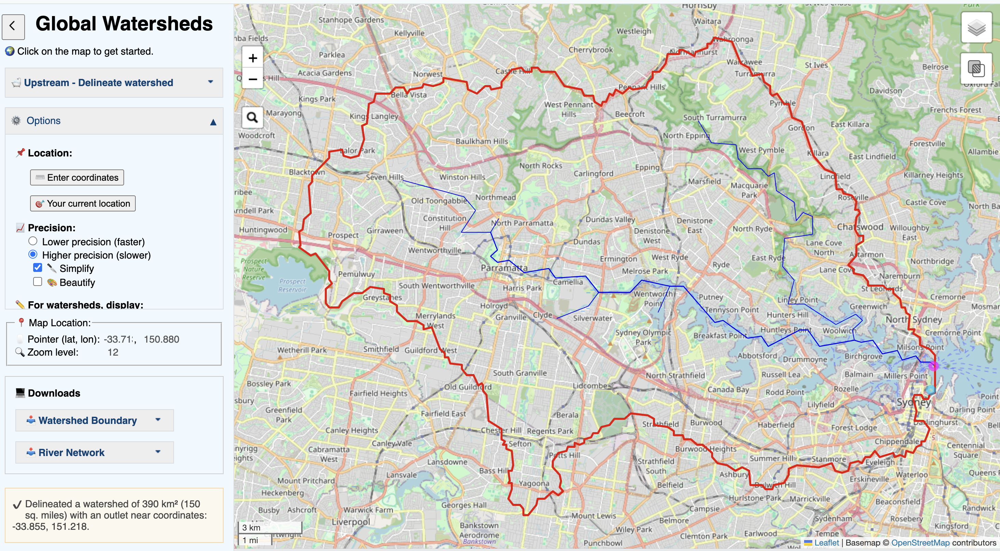
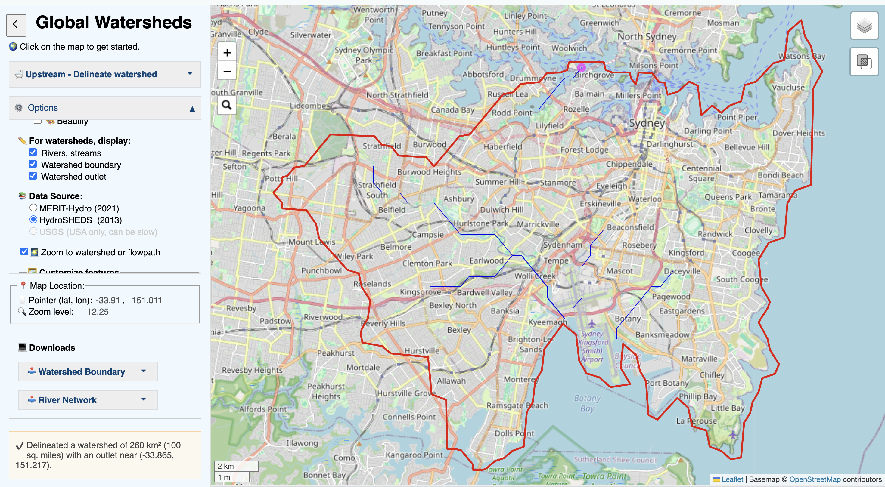

Week 05 · October 2026
Where does Water Go in Sydney?
The question
Where does water at my Sydney site near the Royal Botanic Garden come from, where does its runoff go, and who else depends on the same water resources? I examine hydrological connectivity, adjacency between drainage areas, and proximity to engineered water infrastructure.
The data
I used MERIT-Hydro (2021) from the University of Tokyo and HydroSHEDS (2013) through Global Watersheds to delineate my site's surface catchment. Both use approximately 90 m resolution hydrological data, with catchment area measured in km². MERIT-Hydro was run at higher precision and is available under CC BY-NC 4.0 or ODbL 1.0, while HydroSHEDS uses its own data licence permitting educational and research use. More information is available at https://mghydro.com/watersheds/help.html.
For water stress, I used WRI's Aqueduct 4.0 Water Risk dataset, licensed under CC BY 4.0, with a baseline period of 1979-2019 and data vintage April 2023. Its water stress indicator is a dimensionless ratio of withdrawals to renewable water supply, calculated at the HydroBASINS Level 6 sub-basin scale rather than for individual buildings.
The method
I entered coordinates (-33.865, 151.217) -the location of the Royal Botanic Garden - into Global Watersheds. MERIT-Hydro at higher precision produced a catchment of 390 km², with the outlet snapped to (-33.855, 151.218), approximately 1.12 km away. I cannot find data of MERIT-Hydro at lower precision. HydroSHEDS returned 260 km², a 1.50-fold difference between the two available results. In ArcGIS Map Viewer, I examined Aqueduct's Baseline Annual and Monthly layers. My annual water stress value was 0.63 (High, 40-80%). The selected polygon covered 3,863.40 km², approximately 38,634 times my assumed site area of 0.1 km².
The evidence


What I found
My original catchment estimate of 400 km² was close to the MERIT-Hydro result, but the delineation showed a more complex drainage network leading toward Sydney Harbour. MERIT-Hydro and HydroSHEDS produced substantially different boundaries, suggesting sensitivity to dataset choice and outlet snapping in Sydney's urban coastal landscape.
WaterNSW's Greater Sydney Water Supply System diagram identifies the Warragamba Pipeline, which transports water eastward from Warragamba Dam toward Prospect. This engineered transfer connects water sources beyond my site's modelled surface catchment, although the precise route supplying my site could not be confirmed. Monthly water stress also varied considerably: January reached 1.1785, compared with 0.3896 in June, despite an annual value of only 0.63.
What this does not show
I am using annual basin-level water stress to stand for water availability throughout the year at my Sydney site, and it might fail because the annual value conceals monthly variation, including January's extremely high water stress. The basin-scale indicator also cannot establish whether an individual site receives adequate or usable water.
AI use: Codex was used to help tidy and debug the HTML for the Week 05 entry, and AI was used to help revise wording and draft alt text. The final interpretation are my own.